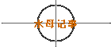
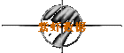
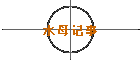
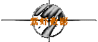

1
9
9
8
年
11
月
3
日
显
视
数
据
： |
zixia (没有美眉〓大木瓜)
共上站 999 次，发表过 16MB 篇文章
上次在 Sat Feb 29 00:00:00 1969] 从 [Home.GirlFriend.Earth] 到本站一游。
离线时间[因在线上或非常断线不详] 信箱：[ ] 生命力：[999] 等级:
[CXBS]。
目前在站上，状态如下：
木瓜发呆
个人说明档如下： 发信人: zouyu (……), 信区: Love
标 题: zixia的猪肉卷
爱情来得快去得也快，只有猪肉卷是永恒的.
……好精辟的话
不过想想：它们不乏相似之处。
爱情多是自作自受，猪肉卷也很少白来。
猪肉卷吃后回味无穷，爱则更胜一筹。
爱情失去实在是痛苦……如果你很饿，有人把你吃了一半的猪肉卷抢走
大概也不是很愉快吧（我甚至会觉得比失去爱情还痛苦）
发信人: supergod ( 刹帝利),
信区: Love
[★紫虾大餐★：zixia.IsCool.Net]
我没有猪肉卷,也没经过爱情之洗涤,
日子比白开水还无味.我只有夸白开水味道好来度日. [E-mail:zixia@126.com]
可喜的是从来不会担心失去什么.
|
1
9
9
8
年
11
月
3
日
真
实
数
据
： |
zixia (没有美眉〓大木瓜)
共上站 589 次，发表过 1570 篇文章
上次在 [Tue Nov 3 14:11:28 1998] 从 [166.111.49.40] 到本站一游
离线时间 [Tue Nov 3 14:14:34 1998] 信箱：[信] 生命力：[119] 等级: [ B ]
目前在站上，状态如下：
主菜单
个人说明档如下： 发信人: zouyu (……), 信区: Love
标 题: zixia的猪肉卷
爱情来得快去得也快，只有猪肉卷是永恒的.
……好精辟的话
不过想想：它们不乏相似之处。
爱情多是自作自受，猪肉卷也很少白来。
猪肉卷吃后回味无穷，爱则更胜一筹。
爱情失去实在是痛苦……如果你很饿，有人把你吃了一半的猪肉卷抢走
大概也不是很愉快吧（我甚至会觉得比失去爱情还痛苦）
发信人: supergod ( 刹帝利), 信区: Love
[★紫虾大餐★：zixia.IsCool.Net]
我没有猪肉卷,也没经过爱情之洗涤,
日子比白开水还无味.我只有夸白开水味道好来度日. [E-mail:zixia@126.com]
可喜的是从来不会担心失去什么.
|

  
 